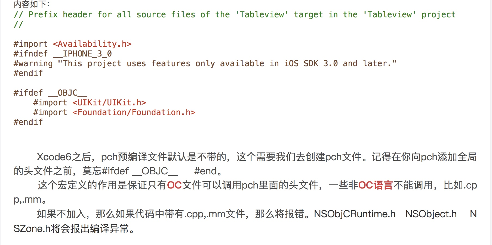

kvo的实现原理
深拷贝与浅拷贝
什么是浅拷贝、深拷贝？
简单理解就是，浅拷贝是拷贝了指向对象的指针， 深拷贝不但拷贝了对象的指针，还在系统中再分配一块内存，存放拷贝对象的内容
如何判断浅拷贝、深拷贝？
深浅拷贝取决于拷贝后的对象的是不是和被拷贝对象的地址相同，如果不同，则产生了新的对象，则执行的是深拷贝，如果相同，则只是指针拷贝，相当于retain一次原对象, 执行的是浅拷贝.

mutableCopy返回的是可变对象，copy返回的是不可变对象。
把一个对象赋值给一个属性变量，当这个对象变化了，如果希望属性变量变化就使用strong属性，如果希望属性变量不跟着变化，就是用copy属性。一般情况下，我们都不希望字串的值跟着NSMutableString变化，所以我们一般用copy来设置string的属性。
iOS视图约束
自动约束方法
updateConstraintsIfNedded
触发开始约束更新
当有新的布局时，系统调用此方法确保视图和子视图约束信息的更新，系统会自动调用这方法，我们也可以手动调用此方法，来检查最新的约束条件updateConstraints
更新约束
我们可以通过重写此方法来设置自己的约束，系统在调用layOut布局之前，回调用这个方法，确认在视图的约束
当我们的视图有约束变化或者失效，我们可以改变这些约束然后调用setNeedUpdateConstraints标记约束需要更新
需要在此方法最后调用super updateConstraints-（BOOL）neddUpdateConstrains
调用此方法根据此方法的返回 决定是否需要更新约束setNeedsUpdateConstraints
当视图需要更新时 我们可以调用此方法，然后在系统决定更新时机
updateConstranins和layOut方法联系
AutoLayout在更新显示view之前，会先调用updateContrains和layingOutView，layout和依赖于Contrains，而view的最终显示依赖于layout
第一步：update constrains 进行视图的约束，从俯视图到子视图更新约束信息，可以通过调用setNeedsUpdateConstraints来触发此步骤. 而当我们做出一些改变约束的事情事，可以调用updateConstraintsIfNedded来通知约束改变，可以在updateConstraints方法中重写或者补充一些视图的约束
第二步: lauout 根据上一步的约束结果，从父视图到子视图来设置视图的bounds frame等 确定试图位置，与constrains类似 有setNeedLayout layoutIfNeeded layoutSubviews方法
第三步: 此步骤时 把view展示在屏幕上 此步骤可以通过setNeedDisplay来触发
这三个步骤互相依赖，每一步的触发都依赖于上一步
补充
`UIViewControlle
```r`中有`- (void)updateViewConstraints`默认实现是调用UIView的`uodateConstraints`
静态库与动态库
库(library)就是一段编译好的二进制代码,加上头文件来供别人使用。
使用库的情况:
- 当我们想封装代码给别人使用而不想别人看到源码
- 当代码不会经常改动，可以将其打包成库，减少编译时间
动态库、静态库
库分为两种静态库和动态库
静态库:在链接时会被直接复制目标程序中，这样在编译完成后程序并没有外部依赖，但是目标程序会变大
动态库:动态库在链接时并不会被拷贝到目标程序中，目标程序只会存储指向动态库的引用，程序运行后，动态库才会真正加载进来，动态库不需要拷贝到程序中，不影响程序体积，同一份库可以被多个程序使用，但是使目标程序依赖于外部环境
iOS
静态库在windows中为.lib mac和linux下为.a mac下还有 .framework
动态库在windows下为.dll mac为.dylib和.framework linux下为.so (系统提供的framework都是动态库)
在iOS开发中还会用到Framework，在iOS8之前 只能使用苹果的framework动态库，而在iOS8之后，开发者可以自己打包framework，但是自己开发的framework还是类似静态库，需要拷贝到app中，苹果又把这种 Framework 称为 Embedded Framework
iOS CPU 和 Xcode Architectures
arm64：iPhone6s | iphone6s plus｜iPhone6｜ iPhone6 plus｜iPhone5S | iPad Air｜ iPad mini2(iPad mini with Retina Display)
armv7s：iPhone5｜iPhone5C｜iPad4(iPad with Retina Display)
armv7：iPhone4｜iPhone4S｜iPad｜iPad2｜iPad3(The New iPad)｜iPad mini｜iPod Touch 3G｜iPod Touch4
i386是针对intel通用微处理器32位处理器
x86_64是针对x86架构的64位处理器
模拟器32位处理器测试需要i386架构，
模拟器64位处理器测试需要x86_64架构，
真机32位处理器需要armv7,或者armv7s架构，
真机64位处理器需要arm64架构。
Xcode中指令集相关选项（Build Setting中）
Architectures
指定工程被编译成可支持哪些指令集类型，而支持的指令集越多，就会编译出包含多个指令集代码的数据包，对应生成二进制包就越大，也就是ipa包会变大。
Valid Architectures
限制可能被支持的指令集的范围，也就是Xcode编译出来的二进制包类型最终从这些类型产生，而编译出哪种指令集的包，将由Architectures与Valid Architectures（因此这个不能为空）的交集来确定
Build Active Architecture Only
指定是否只对当前连接设备所支持的指令集编译
当其值设置为YES，这个属性设置为yes，是为了debug的时候编译速度更快，它只编译当前的architecture版本，而设置为no时，会编译所有的版本。 所以，一般debug的时候可以选择设置为yes，release的时候要改为no，以适应不同设备。
Valid Architectures 设置里， 默认为 Standard architectures(armv7,arm64),如果你想改的话，自己在other中更改
常用宏定义
#ifdef OBJC宏定义

NSNotification
notification的使用
注册观察者
- (void)addObserver:(id)notificationObserver selector:(SEL)notificationSelector name:(NSString *)notificationName object:(id)notificationSender
注意:
notificationObserver不能为nilnotification Selector回调方法有且只有一个参数(NSNotification对象)- 如果
notificationName为nil，则会接收所有的通知(如果notificationSender不为空，则接收所有来自于notificationSender的所有通知) - 如果
notificationSender为nil，则会接收所有notificationName定义的通知；否则，接收由notificationSender发送的通知 - 监听同一条通知的多个观察者，在通知到达时，它们执行回调的顺序是不确定的
post通知
[[NSNotificationCenter defaultCenter] postNotificationName:@"First" object:@"博客园-Fly_Elephant"];
-(void)notificationFirst:(NSNotification *)notification{
NSString *name=[notification name];
NSString *object=[notification object];
NSLog(@"名称:%@----对象:%@",name,object);
}
//名称:First----对象:博客园-Fly_Elephant
[[NSNotificationCenter defaultCenter] postNotificationName:@"Second" object:@"http://www.cnblogs.com/xiaofeixiang" userInfo:dict];
-(void)notificationSecond:(NSNotification *)notification{
NSString *name=[notification name];
NSString *object=[notification object];
NSDictionary *dict=[notification userInfo];
NSLog(@"名称:%@----对象:%@",name,object);
NSLog(@"获取的值:%@",[dict objectForKey:@"key"]);
}
//名称:Second----对象:http://www.cnblogs.com/xiaofeixiang
//获取的值:keso
通知原理
单例的方式创建一个NSNotificationCenter对象
对象注册观察者时 将注册的name selector object 作为一个模型 添加到一个数组中
post时根据名字和object 找到数组中注册的对象 执行通知的方法
多线程
在多线程应用中，Notification在哪个线程中post，就在哪个线程中被转发，而不一定是在注册观察者的那个线程中。
也就是说，Notification的发送与接收处理都是在同一个线程中.
通告队列 NSNotificationQueue
NSNotificationQueue 作用是充当通告中心(NSNotificationCenter)的缓冲区,以FIFO的顺序进行维护。当一个通告上升到队列最前时，就将他发送给通告中心，通告中心随后将它派发给所有注册为观察者的对象
参考NSNotification&NSNotificationCenter(实现原理,多线程,内存管理角度)
参考iOS NSNotification的使用